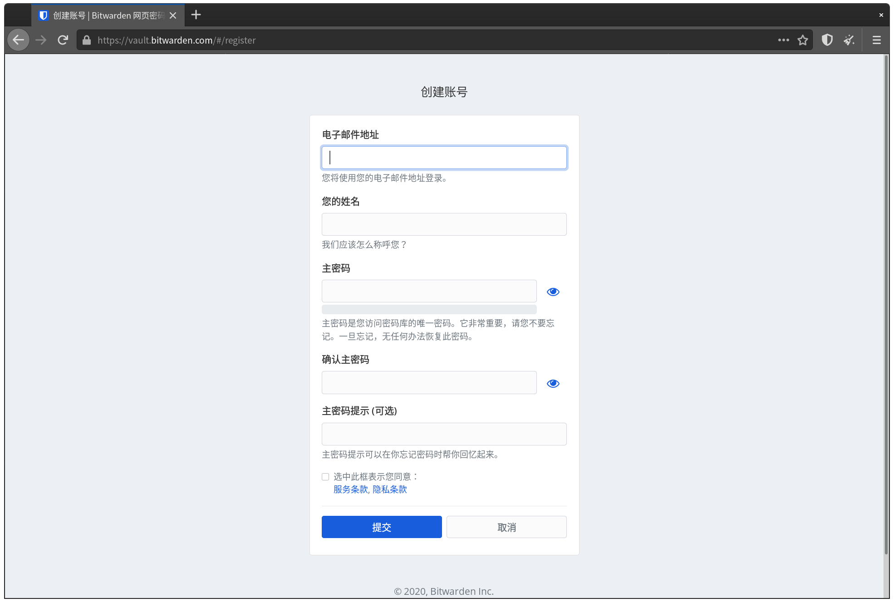
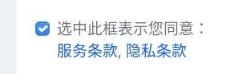
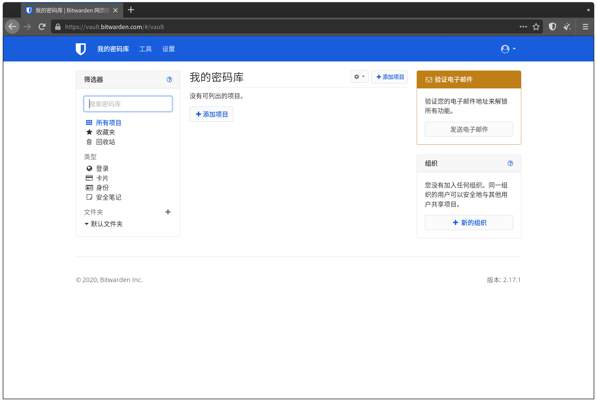
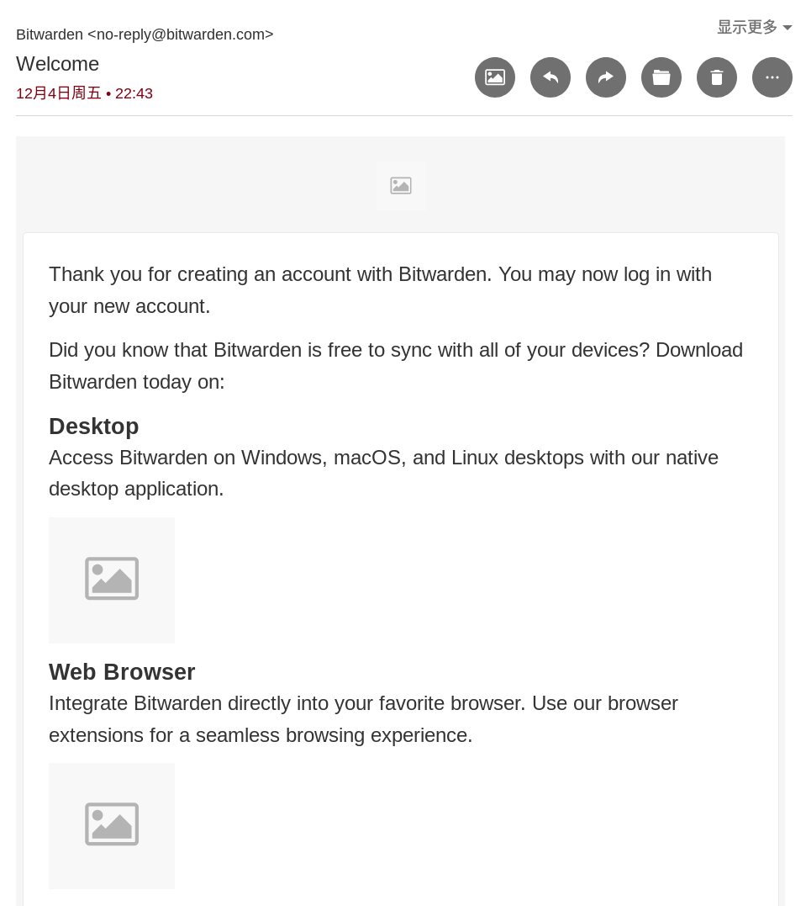
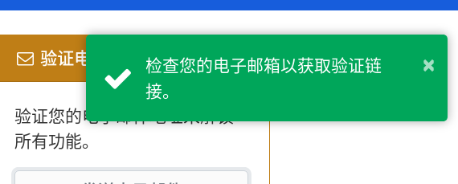
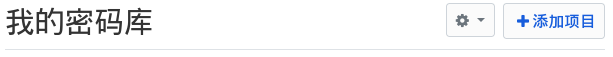
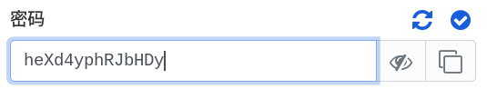
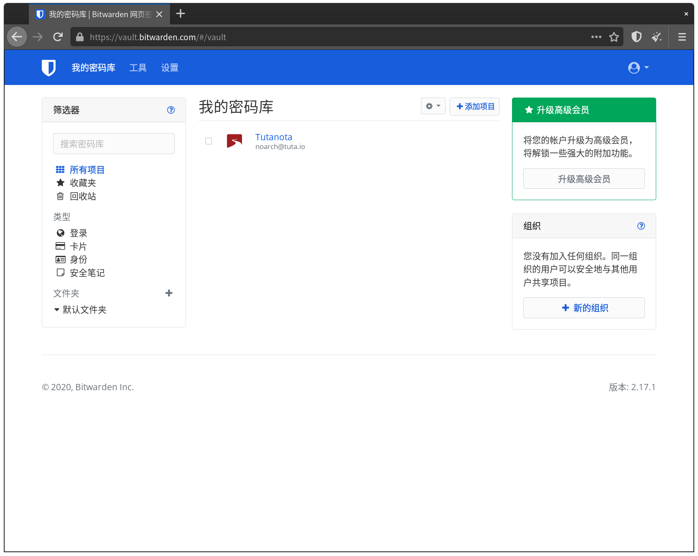

Bitwarden 網頁版
Bitwarden 不怎麼特別，但它擁有一個密碼管理器應有的所有安全性和功能。It just Works.
開發者：Bitwarden, Inc. | 官方網站 | 原始碼
客戶端 GPLv3, 服務端 AGPLv3 和 Bitwarden EULA | 服務條款 | 隱私政策
回顧
上一章中 noarch 定義了一個合格的密碼管理器，我們將要介紹的 Bitwarden 就是符合標準的一個。
它使用 AES-256 加密你的密碼庫，並將你的主密碼使用加鹽的 PBKDF2 SHA-256 形式儲存，以保證密碼庫的零訪問。零訪問意味著你的密碼庫只在客戶端被解密，就連 Bitwarden 的員工或可能搜查 Bitwarden 的警方都無法通過正常方式獲取你的密碼。
最重要的 - 它幾乎全由自由軟體組成。得益於此，如果你不信任 Bitwarden 官方雲，你甚至可以自己搭建 Bitwarden 伺服器，自己管理自己的資料；不過 noarch 不會在此教你如何自建 Bitwarden 伺服器。
可能的疑問
本章要講述的是 Bitwarden 的網頁版密碼庫。
你可能會好奇，既然是網頁，那麼為什麼 Bitwarden 說他們不能訪問你的密碼呢？
答案是 Javascript 的力量。Javascript 是網頁在你瀏覽器中執行的“小程式”，瀏覽器會自動載入它們並執行。理論上，它們可以做任何需要“安裝”的程式可以做的事，而不需要讓你“安裝”。
其實，privacy.noarch 就在使用 Javascript. 試著點選頁面左上角的 ，你可以看到本書選單的開啟和關閉。得益於 Javascript, 這個選單可以被顯示或隱藏，並且開關的行為會展示動畫。沒有 Javascript, 這個選單的開關動畫需要在 privacy.noarch 的伺服器中渲染並傳輸；對於 privacy.noarch 目前 (2020 年) 的瀏覽量而言可能可行，而對於 Google 等巨型服務，為數億使用者每人渲染視覺效果顯然不現實。
Bitwarden 網頁版在開啟時會載入對應的 Javascript 程式，並且下載你的密碼庫。解鎖和操作這個密碼庫的行為完全被已經載入到本地的 Javascript 完成，因此你不需要擔心你的密碼庫未加密經過網際網路傳輸。
註冊帳號
Bitwarden 的註冊非常簡單明瞭。首先我們開啟 Bitwarden 的官網 bitwarden.com:
如果你看到下方的 Cookie 提示，你可以直接點選“拒絕”。拒絕後 Bitwarden 網頁版不會留下跨站 Cookie.

別被這個網頁上的英文嚇跑。雖然 Bitwarden 官網只有英文，但接下來我們操作的密碼庫具有中文翻譯。
點選右上角的 Get Started 來註冊帳號，你會被帶到一個表格：

就像註冊任何其它帳號一樣，填寫你的郵箱地址和名字。名字可以使用假名，就像這樣：

不過等一下。你可能現在就在犯一個錯誤：在密碼管理器上使用你之前用過的密碼。
noarch 強烈反對這種行為。
請當場想出一個夠強的密碼，它最好有至少 15 位，擁有大小寫字母、數字和符號...
到底怎麼做啊！我想不出來！
人腦密碼生成器
在我們把生成密碼這件事交給密碼管理器前，請想想你之前用過的密碼。
noarch 就用過自己的名字首字母和生日；現在想起來最可怕的一個是直接使用使用者名稱，加上其中幾個字元用 Leet (1337) 替換成對應的符號和數字。
請別這樣做。如果你使用這些能聯絡到個人身份，或是關於你的，長久有效的資訊，例如 n0@rcH1sn0tgaYn0@rcH1sn0tgaY
所以 noarch 想要分享一下自己的密碼“生成”思路，它用來“生成”你的密碼管理器主密碼：
這只是 noarch 的個人做法，提供給那些根本想不出來的讀者。如果你有更好的主意，noarch 將會非常感謝你的貢獻。
- 像 noarch 之前講的，避開任何自己的長期資訊。任何“最喜歡的”也要避開。
- 想想自己最近做的事情、讀的書、看的電影或是玩過的遊戲。
- 如果適用，你也可以想想這些書、遊戲或電影中發生的事。
- 把它們寫下來。noarch 最近在讀 Richard Stallman 的傳記 Free as in Freedom.
- 用 1337 編碼它。這樣它就包含了數字和符號。
- 加上一些非常易變的數字。比如你“生成”密碼時的時間，或是你現在在使用的某個軟體版本號。noarch 在“生成”這個密碼時的時間是下午 5:40.
- 把它夾在第4步得出的內容中間某個位置。
經過這樣一個步驟，noarch 寫出了一個這樣的密碼：

如果你有任何其它主意，你還可以把它和 noarch 的方法結合在一起！例如你還可以把最後的 Freed.m 倒序成 m.deerF, 得出最終結果 fR3e@s!n1740m.deerF. 現在你就得到了一個基本沒人猜得出來，並且機器也難以爆破的主密碼，用於加密你的 Bitwarden 密碼庫。
別擔心，noarch 當然不會將上述密碼進行實際使用，你也絕對不要真用上述的示例密碼。
最後，你可以選擇提供一個密碼提示；當你真的忘記密碼時，你可以請求 Bitwarden 將它傳送到你的郵箱裡。
密碼提示是明文儲存的，並且另一款密碼管理器 LastPass 曾經發生的資料洩露中就包含密碼提示。因此，請不要在內填寫有關自己的資訊。例如 noarch 簡單地在這裡寫了
GNU, 因為GNU就是密碼中提到的“自由軟體”概念開創者之一。
記住密碼
如果你從來沒有嘗試記憶過 fR3e@s!n1740Freed.m 這麼強的密碼，那麼你可能會在建立完帳號後一瞬間就忘掉你剛才建立的密碼。
不過，既然我們使用的密碼是有規律的，那麼經過一定的練習，你一定可以記住。
你現在可以將你的主密碼寫在一張紙上，然後放在一個安全的地方，就像你原來用小本子記密碼一樣。直到你能不假思索輸入這個密碼為止，你都會需要參考它，以防止你在這段學習期間內忘掉密碼。
請確保這張紙可以被輕易摧毀。因此，也請避開你“不捨得”摧毀的記事本。嚴禁使用可擦筆，因為可擦筆即使擦掉後也會留下痕跡，或是被冰箱冷凍層的溫度復原。
在記住後，請將紙張摧毀到至少纖維級別。常見的方法有燒燬或泡水搗碎。
在學習區間內，嚴禁使用任何電子方式儲存你的主密碼。這樣做會使密碼管理器失去其意義。
當你想好並寫下了密碼，你就可以閱讀並同意 Bitwarden 的服務條款和隱私政策了。

最後，點選“提交”來註冊。
登入、驗證，並和密碼保險箱說聲好
在點選“提交”後，你會被帶到登入介面。你需要在這裡再次輸入你的密碼：

因為密碼管理器的安全特性，Bitwarden 不像許多服務一樣可以“記住密碼”。你只能選擇“記住郵件”，並手工輸入密碼。如果你不想每次訪問密碼庫都輸入密碼，你可以安裝 Bitwarden 客戶端或瀏覽器外掛。
登入後，你就進入了 Bitwarden 密碼庫。

在我們開始將密碼放入 Bitwarden 之前，你可能注意到了右上角的“驗證電子郵件”提示。我們現在就來解決這個問題。
開啟你用來註冊 Bitwarden 的電子郵件賬戶；你應該會看到一個“歡迎”郵件。

現在回到 Bitwarden 密碼庫，在“驗證電子郵件”裡點“傳送電子郵件”。

然後你會在郵箱裡看到一封用於驗證的 "Verify Your Email" 郵件，其中包含一個 "Verify Email Address Now" 按鈕。

取決於你的郵件客戶端安全設定，這封郵件可能會像上圖一樣無法正常載入。不用擔心，這個按鈕能在不載入遠端內容的情況下工作。
noarch 推薦像 Thunderbird 或 Tutanota 這樣攔截遠端內容的郵件客戶端 / 提供商，它們能幫你阻擋大部分來自郵件的惡意軟體，並防止郵件傳送者通過遠端請求追蹤你。
在確認來源地址是 no-reply@bitwarden.com 後，點選這個按鈕，你會被帶到一個有提示的登入頁面。

在這裡再次登入，然後你就可以正式開始使用 Bitwarden 了。

新增你的第一條密碼
在 Bitwarden 儲存密碼同樣簡單明瞭。
不過，如果你在密碼管理器儲存以前重複使用的密碼，它將失去意義。所以 noarch 將在這演示為 Tutanota 郵箱使用 Bitwarden 生成並儲存密碼。
要讓 Bitwarden 為你儲存密碼，點選“新增專案”。

然後你可以在這填寫你的帳號名稱（服務）、使用者名稱/郵箱，以及登入時的網址 (URI)。

雖然 URI 是可選的，但 noarch 建議你填寫它。URI 有兩個用途：
- 用於獲取這個帳號的圖示，並展示在 Bitwarden 密碼庫內。
- 用於自動填寫。這個會在你使用 Bitwarden 瀏覽器外掛或手機應用時有用。
除了密碼之外的欄位填完後是這樣：

接下來你就可以點選“密碼”欄位上方的 按鈕來生成密碼。生成的密碼會自動填寫到“密碼”欄位裡。

點選 可以用明文檢視密碼，再次點選 可以將其恢復到隱藏狀態。

點選 ，這個密碼就會被複制到剪貼簿。
接下來，你需要登入你要修改密碼的帳號，然後找到修改密碼的入口：
輸入你的舊密碼，然後貼上新密碼。只是一個普通的密碼修改過程。
修改完密碼後，回到 Bitwarden, 在密碼錶單點選“儲存”。你會被帶回“我的密碼庫”。

讀取密碼管理器中的密碼
在“我的密碼庫”中點選對應帳號的專案，你就可以檢視剛剛在編輯的表單，在其中進行任何操作。

以登入賬戶為例，在“密碼”欄位點選 ，然後在要登入服務的密碼框貼上。
如果你有太多賬戶，你可以使用左側的“篩選器”。使用篩選器後，只有符合搜尋結果的專案會顯示在右側。

登入 Bitwarden
當你關閉瀏覽器、閒置一段時間，或是手動退出 Bitwarden, 你將需要重新登入密碼庫。
完全關閉瀏覽器
如果你完全關閉瀏覽器，你需要重新登入 Bitwarden. 訪問 bitwarden.com, 然後 "Log In":
你就可以輸入你的主密碼，然後登入進入密碼庫了。
鎖定
當你開啟 Bitwarden 網頁密碼庫一段時間閒置不用（預設 15 分鐘），Bitwarden 會自動“鎖定”：

同樣，輸入密碼然後“ 解鎖”就可以了。
進階功能
下面是一些 noarch 認為一般人可能不會用到的功能，但也會在這做介紹。
儲存信用卡、身份、以及筆記
Bitwarden 還可以用來儲存信用卡和身份。搭配 Bitwarden 瀏覽器外掛或手機應用使用時，Bitwarden 可以幫你自動填寫這些表單。
新增它們的方法和新增密碼類似，只不過需要填寫的資訊不同。你可以通過“這是什麼型別的專案？”在這些模式中切換。

作為例子，下面是 Bitwarden 儲存信用卡資訊的表單。

這些其它型別的表單使用與密碼錶單相同的方式加密，因此 Bitwarden 無法將你儲存在內的信用卡或護照資訊作為它用。
修改密碼生成器強度
當你在 Bitwarden 密碼錶單中點選 , Bitwarden 預設生成長度為 14 位，包含數字與大小寫字母的密碼, 就像這樣：
WkRUdb6LRqF8sC
Bitwarden 這樣做是為了保證最大相容性，因為有些服務不支援密碼中包含符號。
不過 noarch 以及一些其它密碼管理器，例如 KeepassXC 認為這樣生成的密碼強度不夠高。因此，如果你有需要，可以調節 Bitwarden 密碼生成器引數。
在 Bitwarden 密碼庫頂欄點選 工具 -> 密碼生成器，你應該能看見一個專門的密碼生成器：

在這裡你可以調節密碼型別、長度、包含的字符集以及每種字元最小個數。noarch 建議你將密碼生成器調成這樣。現在它長度為 24 位，包含完整的 [A-Za-z0-9!@#$%^&*].

匯入密碼庫
如果你之前在使用其它“密碼管理器”，例如 Chrome 瀏覽器的“儲存密碼”功能，你可以將儲存在那裡的密碼匯入 Bitwarden.
在 Bitwarden 密碼庫 工具 -> 匯入資料，你可以選擇對應的匯入來源。Bitwarden 貼心地 為不同來源提供了英文教程。

以 Chrome 為例，在選擇後，Bitwarden 會給你展示對應的教程連結。
跟隨 Bitwarden 提供的教程，你就可以從各大密碼管理器或“密碼管理器”無痛換到 Bitwarden 了。
匯出密碼庫
如果你想從 Bitwarden 換到其它密碼管理器，你也可以這麼做：
Bitwarden 可以將你的密碼庫匯出為 json 或 csv 格式，它們可以進一步被匯入到 KeepassXC 或任何支援匯入這些格式的密碼管理器。
修改賬戶設定
如果你不慎洩露了主密碼 (noarch 希望你絕對不要)，或你的郵箱被盜，在傷害發生前請立刻在 Bitwarden 內修改對應的設定。
你可以進入 設定 -> 我的賬戶 修改這些設定。無論是修改郵箱地址或是主密碼，你都需要確認當前的主密碼。

總結
你現在應該能夠順利使用 Bitwarden 管理你的密碼了。
雖然目前你的 Bitwarden 密碼庫內只存有一個帳號，不過你可以在之後使用某個沒有存入 Bitwarden 的帳號時下意識將它存入 Bitwarden 並通過上述方法改密碼。
密碼管理器的使用時間越久，它對你提供的便利和安全性越大；noarch 希望你不要被剛開始的麻煩嚇跑，因為它在長期使用後是你的得力助手。